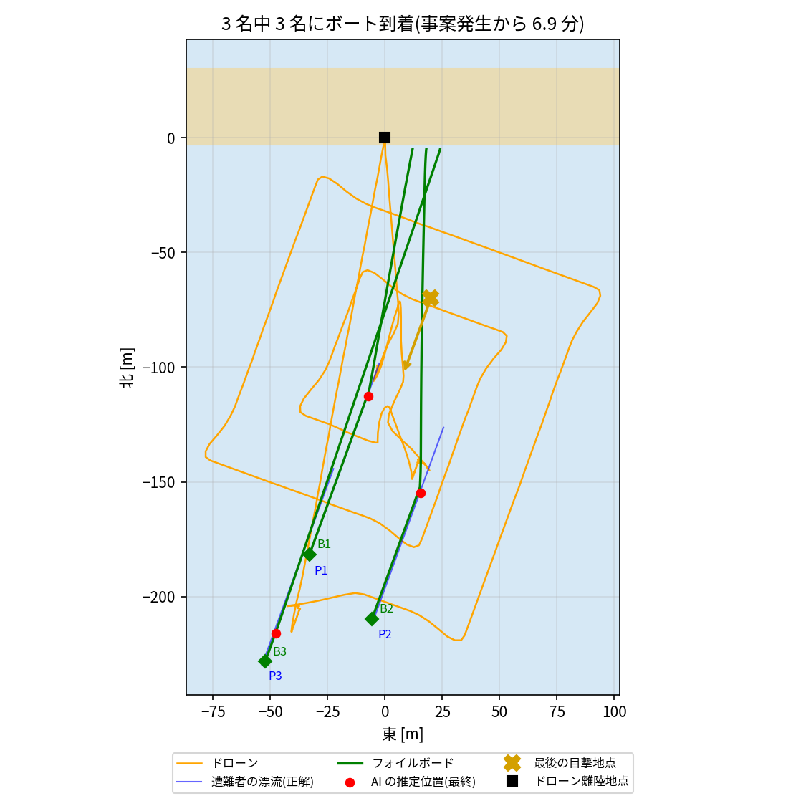

計画書のシステムを、実機を作る前にシミュレーションで動かし、数値目標をどこまで満たせるかを確かめました。計画書のシステムでは、ドローンが AI で遭難者を見つけ、座標を LoRa で送り、自律航行フォイルボードが浮体として駆けつけます。
想定:遊泳者 3 名(立ち泳ぎの人 2・浮いている人 1)が、離岸流(0.25 m/s・方位 200°)で沖へ流されている。事案発生の 2 分後にドローンが砂浜から出動し、水際にはフォイルボードが 3 台待機している。ドローンが事前に知っているのは、最後の目撃地点と海流の予報だけ。
| 要素 | 内容(計画書との対応) |
|---|---|
| ドローン | PX4 SITL のクアッドコプター。前方斜め下 30° のカメラを持つ。漂流予測 → 拡大方形捜索 → YOLO11m(画像を 3×3 に分けて推論)で発見 → 高度 10 m に降りて再確認 |
| 映像伝送 | 候補を見つけてからオペレータが GO を出すまでだけ、映像を地上へ送る(計画書の「イベント駆動の映像伝送」) |
| オペレータ | 映像を確認して救助を決定する(3 秒で GO とした) |
| LoRa | SF7・125 kHz。送信時間はペイロード長から計算する(Semtech の式)。処理遅延 20 ms、パケットロス 3%、再送なし。ドローンは遭難者の上空にとどまり、毎秒 1 回、推定位置・時刻・海流を送る |
| フォイルボード | 先回り誘導(遭難者の予測位置 + 到着までの漂流分)、方位の P 制御、時速 14.4 km 以上で離水、最高時速 21.6 km、手前 2 m で逆転停止。停止後は浮体として待機し、発光マーカーを出す。ボートも海流に流される |
| 評価 | 遭難者とボートの本当の位置は、評価専用のプログラムだけが記録する(AI と制御には渡さない) |
| 数値目標(計画書) | 結果 | 判定 |
|---|---|---|
| ボートの最終到着位置の誤差 2 m 以内 | 停止距離 2 m に対して +0.04〜+0.39 m | 達成 |
| 座標伝送の遅延 100 ms 以内 | 平均 85〜86 ms、最大 88 ms(SF7) | 達成 |
| 通信成功率 98% 以上 | 92.9%(パケットロス 3%、再送なし) | 未達 |
| データ通信量 98% 削減 | 86〜89% 削減(映像を送ったのは 38〜51 秒) | 未達 |
| 事案発生から 5 分以内に救助 | 1 人目 2.9 分・2 人目 3.9 分・3 人目 6.9〜7.3 分 | 2/3 名 |
| (参考)AI の発見・確定 | 3 回とも 3 名全員、誤り 0 件 | ― |

| 時刻 | 出来事 |
|---|---|
| 0〜120 s | 出動まで |
| 137 s | 1 人目を発見 |
| 150 s | GO |
| 176 s | ボート到着(航行 26 秒) |
| 189〜234 s | 2 人目を発見・確定・GO・ボート到着(航行 32 秒) |
| 234〜360 s | 3 人目を捜索(拡大方形捜索の外周) |
| 360〜417 s | 3 人目を確定・GO・ボート到着(航行 44 秒) |
ボートの航行時間は 26〜44 秒で、救助全体のボトルネックではありませんでした。時間を使っているのは、出動前の待ち時間(120 秒)と、ドローン 1 機で確認とボートの見守りを順番にこなすこと(1・2 人目で計 84 秒、その間は捜索が止まる)です。
ボートの動きは、運動を簡略化したモデル(速度と旋回の制限、離水高さ)で表しています。波・風・浮力・流体力学は計算していません。遭難者の見た目も、Gazebo の人のモデルで代用しています。これらは、実機での検証(計画書の段階的開発)で確かめる必要があります。